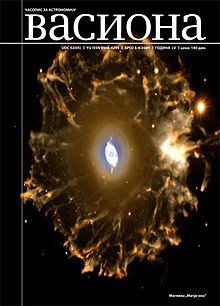

Astronomsko društvo „Ruđer Bošković” je društvo ljubitelja astronomije u Beogradu. Jedno je od najstarijih astronomskih društava u Evropi i najstarije na Balkanu. Osnovala ga je grupa studenata astronomije 22. aprila 1934. godine. Danas okuplja nekoliko stotina članova, uglavnom ljubitelja astronomije. Osnovni zadatak Društva je popularizacija astronomije.
Društvo se bavi se i amaterskim posmatračkim radom. U tu svrhu Društvo je 1964. godine podiglo Narodnu opservatoriju koja se nalazi u specijalno adaptiranoj Despotovoj kuli na Kalemegdanu.
Godine 1934. grupa studenata Beogradskog univerziteta odlučila je da pokrene Astronomsko društvo orijentisano na izučavanje astronomije i njenu popularizaciju. Od 1935. godine do Drugog svetskog rata Društvo je izdavalo časopis Saturn u 12 brojeva godišnje, organizovalo popularna predavanja i posmatranja nebeskih tela i pojava. Posle okupacije zemlje 1941. zabranjem im je rad.
Društvo je nastavilo sa svojim aktivnostima 1951. godine, pod nazivom Beogradski astronomski klub, a od 1953. pod imenom Astronomsko društvo „Ruđer Bošković“ i počelo da izdaje časopis „Vasiona". Časopis izlazi u četiri broja godišnje. U svakom broju donosi vesti iz astronomije i vesti o dešavanjima u Društvu. Izlazi više od pola veka i najstariji je naučno-popularni časopis u oblasti prirodnih nauka u Srbiji. Jedini je javni izvor astronomskih efemerida u Srbiji. Zahvaljujući velikoj aktivnosti svojih članova i pomoći Grada Beograda, godine1964. počinje sa radom Narodna opservatorija koja je smeštena u Despotovoj kuli na Kalemegdanu. Na terasi Opservatorije nalazi se teleskop Zeiss, refraktor (110/2050 mm), i teleskop Tall 200 K (200/2000 mm), reflektor.
Astronomsko društvo „Ruđer Bošković” organizuje događaje koji su besplatni.